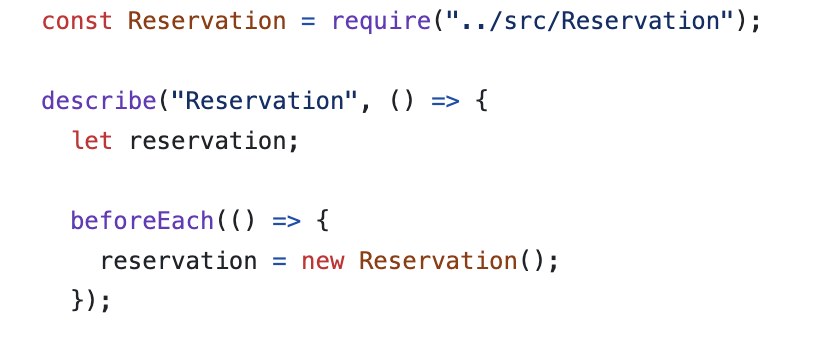
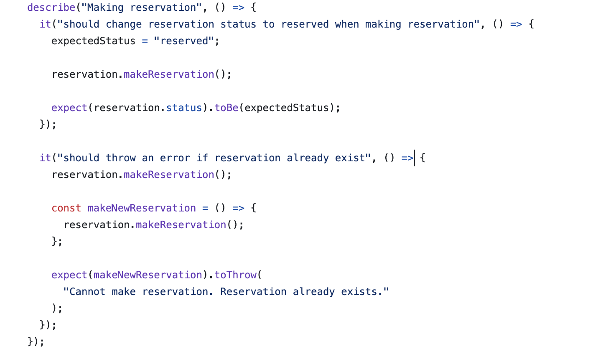
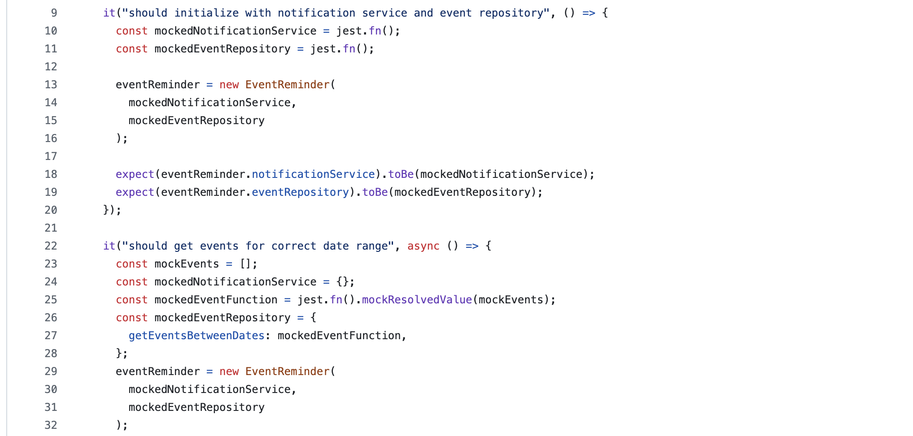
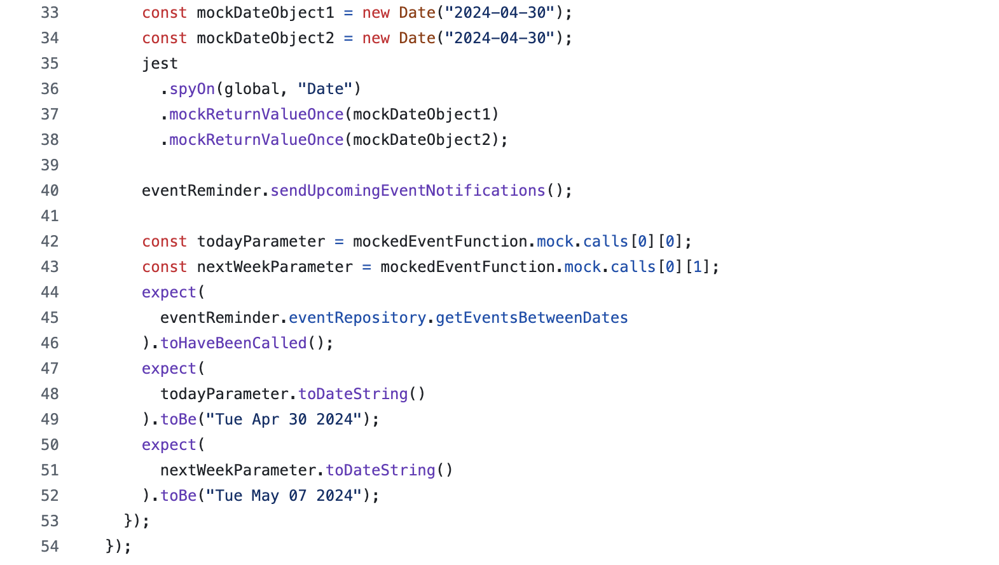
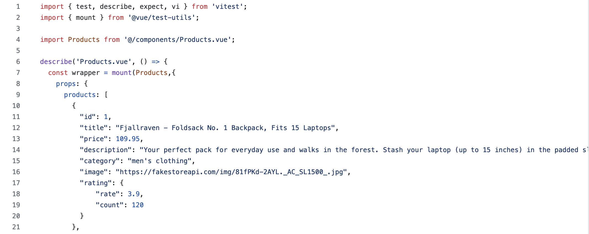

JavaScript testing
describe(name, fn) creates a block that groups together several related tests.
beforeEach(fn, timeout) runs a function before each of the tests in this file runs.

Arrange, Act, Assert

Test Doubles
Mock functions also known as "spies".
jest.fn() creates a completely new mock function, jest.spyOn() spyes on an existing method.

mock.calls contains the arguments of each call made to a mocked function

Frontend Testing
mount() creates a Wrapper that contains the mounted and rendered Vue component.
Props return Wrapper vm props object.

text() returns text content of Wrapper.